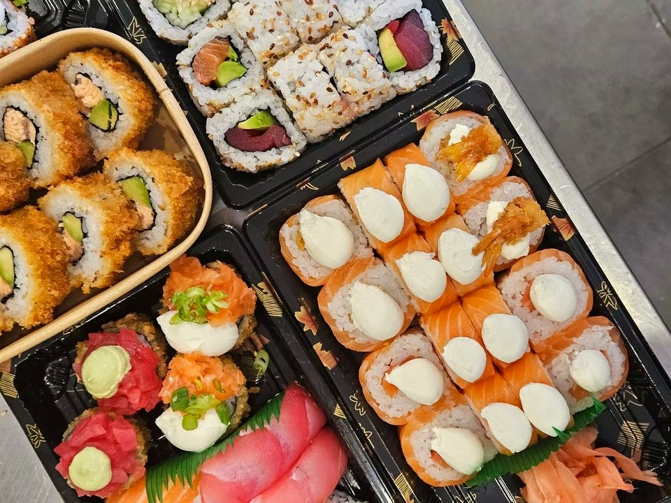
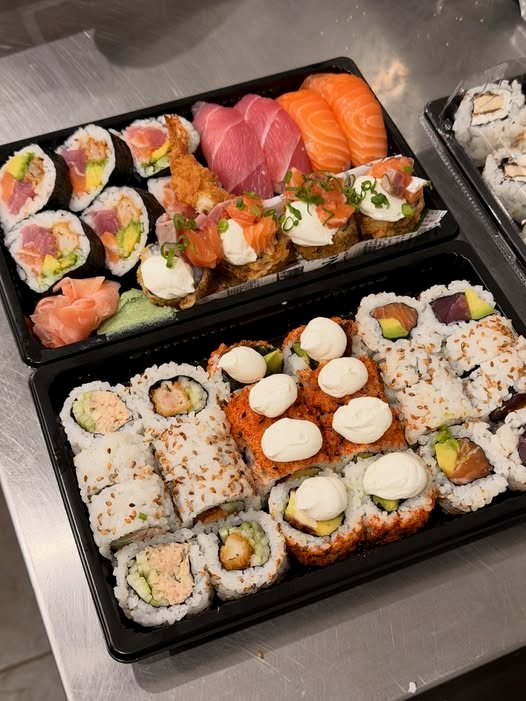
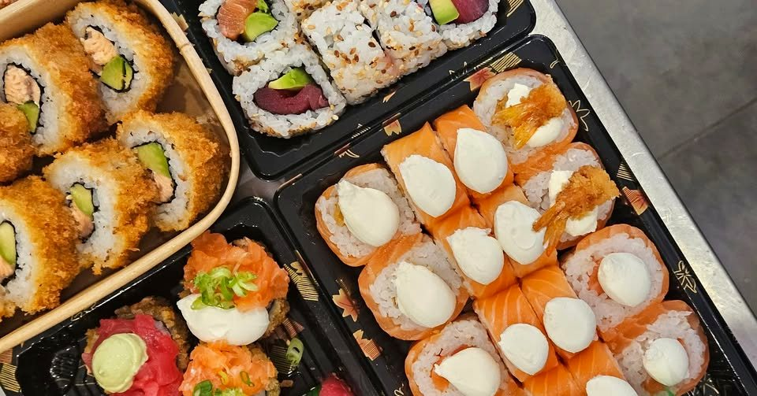
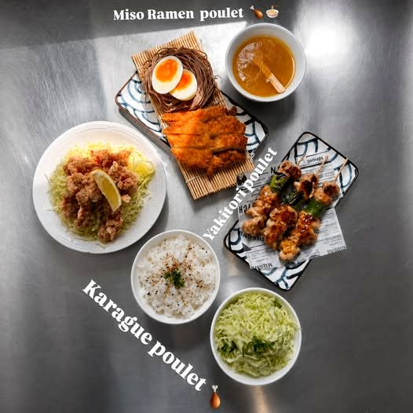
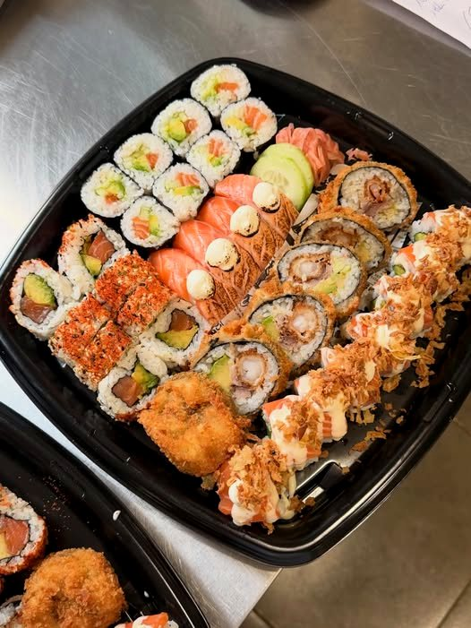
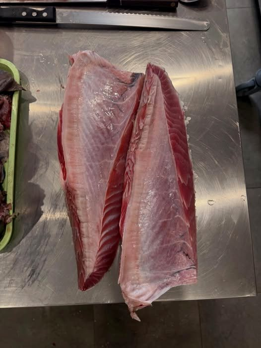

Karaage de poulet
Généreux, ultra-croustillant dehors, tendre dedans, sur chou blanc émincé, cébette fraîche et sauce verte maison.
Dark kitchen · Sainte-Marie
Préparés frais, uniquement sur commande, entre fusion et tradition. À récupérer sur place, rue des Vavangues.


Création signature
Un roll bien doré et ultra croustillant, au goût bien local : croustillant, fumé, fraîcheur et saveurs péi.

La Base, le guide des classiques
Il y en a pour tous les goûts. Touchez un nom pour le découvrir.

Côté chaud
Trois incontournables de la cuisine japonaise, à savourer bien chauds.
Généreux, ultra-croustillant dehors, tendre dedans, sur chou blanc émincé, cébette fraîche et sauce verte maison.
Un bouillon miso réconfortant, poulet, nouilles soba et œuf fondant.
Des brochettes grillées, généreusement nappées de sauce yakitori.


À partager… ou pas
Choisissez vos envies : votre demande arrive toute prête sur le WhatsApp de SushiParty, qui vous confirme le retrait.
Pensez à commander la veille pour le lendemain : tout est préparé frais.
17 rue des Vavangues
97438 Sainte-Marie
Uniquement sur commande, à récupérer sur place.
En message privé ou par téléphone.